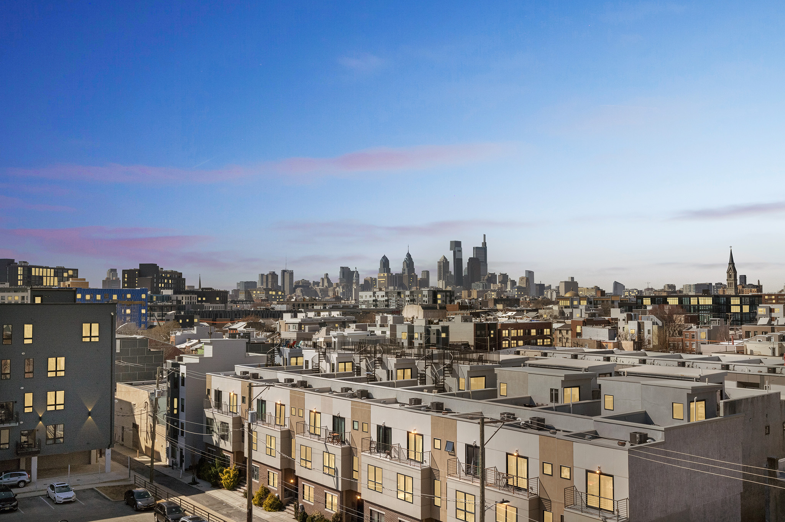

The Urban Sher at 1350 North Front Street
.jpg)
Welcome to 1350 N. Front Street — a brand-new 14-unit apartment building in the vibrant Fishtown/Olde Kensington neighborhood.
Designed for modern living, these units are move-in ready and perfectly located.
Each unit features: high-end finishes, quartz kitchen countertops, stainless steel Samsung appliances, sleek tile backsplashes,
spacious bedrooms with generous closet space, designer-tiled bathrooms, in-unit washer/dryer, large windows for abundant natural light,
LVT flooring, central air and heat control, and secure keyless entry for both unit and main entrance.
Building amenities include: elevator, package/mail room, bike storage, storage lockers (available for rent), and on-site parking (available for rent).
Ideally located near public transportation (Market-Frankford Subway) and major highways for easy commuting to Center City and beyond.
Neighborhood favorites: Suraya, LMNO, Frankford Hall, The Garage, Wm. Mulherin's Sons, Liberty Kitchen PHL, and countless other cafés, restaurants, and breweries.
Pet-friendly with owner approval. Don’t miss your chance to join this exceptional community — schedule your tour today!